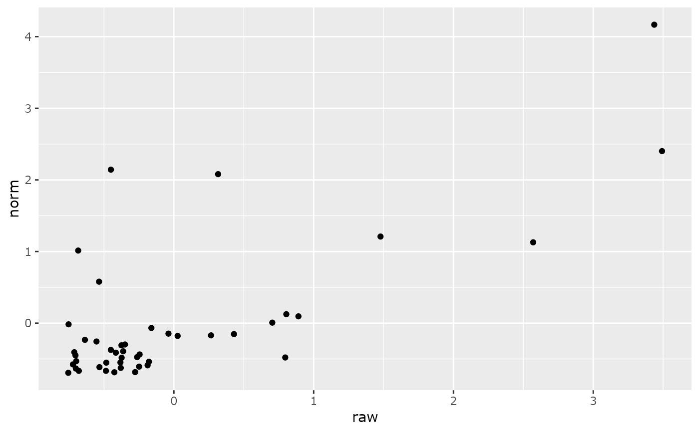

This function implement the method proposed by McKnight et al. 2018 (doi:10.5061/dryad.tn8qs35 )
Arguments
- physeq
(required): a
phyloseq-classobject obtained using thephyloseqpackage.- base_log
(integer, default 2) the base for log-transformation. If set to NULL or NA, no log-transformation is compute after normalization.
- constante
a constante to multiply the otu_table values
- digits
(default = 2) integer indicating the number of decimal places to be used (see
?roundfor more information)
Value
A new phyloseq-class object with otu_table count
normalize and log transformed (if base_log is an integer)
Examples
taxa_sums(data_fungi_mini)
#> ASV7 ASV8 ASV12 ASV18 ASV25 ASV26 ASV27 ASV29 ASV32 ASV34 ASV35
#> 47410 46857 38237 27368 21522 20660 20584 19661 16933 15804 15298
#> ASV41 ASV42 ASV46 ASV47 ASV48 ASV49 ASV50 ASV53 ASV54 ASV58 ASV59
#> 12922 12270 11053 10878 10784 10215 10178 10038 9895 9172 9045
#> ASV61 ASV62 ASV63 ASV64 ASV67 ASV68 ASV71 ASV72 ASV75 ASV77 ASV82
#> 8935 8922 8872 8849 8521 8417 8171 8167 7842 7818 7356
#> ASV83 ASV85 ASV91 ASV93 ASV94 ASV99 ASV100 ASV101 ASV104 ASV105 ASV107
#> 7328 7145 6319 5886 5842 5699 5675 5649 5566 5467 5158
#> ASV108
#> 5137
data_f_norm <- normalize_prop_pq(data_fungi_mini)
taxa_sums(data_f_norm)
#> ASV7 ASV8 ASV12 ASV18 ASV25 ASV26 ASV27 ASV29
#> 414.6046 644.1998 249.0031 259.4578 114.5518 118.3969 39.8368 103.1480
#> ASV32 ASV34 ASV35 ASV41 ASV42 ASV46 ASV47 ASV48
#> 82.3404 372.7509 80.0378 78.9897 83.1868 93.3887 32.1618 25.6481
#> ASV49 ASV50 ASV53 ASV54 ASV58 ASV59 ASV61 ASV62
#> 45.3490 23.2659 40.4996 13.2874 63.4629 51.1092 39.3335 61.9517
#> ASV63 ASV64 ASV67 ASV68 ASV71 ASV72 ASV75 ASV77
#> 20.9074 30.8507 48.5672 12.9911 380.9520 53.6068 30.4545 15.5597
#> ASV82 ASV83 ASV85 ASV91 ASV93 ASV94 ASV99 ASV100
#> 22.2811 177.5237 68.8903 71.8991 15.5826 234.0406 33.1109 19.7700
#> ASV101 ASV104 ASV105 ASV107 ASV108
#> 43.5813 49.3524 27.2813 100.0606 11.9978
ggplot(data.frame(
"norm" = scale(taxa_sums(data_f_norm)),
"raw" = scale(taxa_sums(data_fungi_mini)),
"name_otu" = taxa_names(data_f_norm)
)) +
geom_point(aes(x = raw, y = norm))

data_f_norm <- normalize_prop_pq(data_fungi_mini, base_log = NULL)